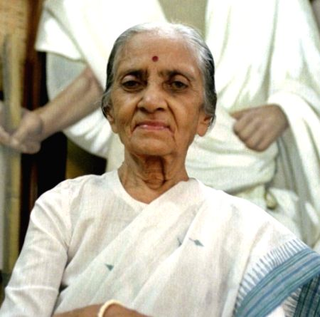

Usha Mehta

Gandhian and political activist of India
About the Legend
☛ Usha Mehta was born in Saras, a village near Surat in modern-day Gujarat.
☛ She organized the Congress Radio (Secret Congress Radio), an underground radio station during the Quit India Movement of 1942.
☛ In 1998, she received the Padma Vibhushan, the second highest civilian award of India.